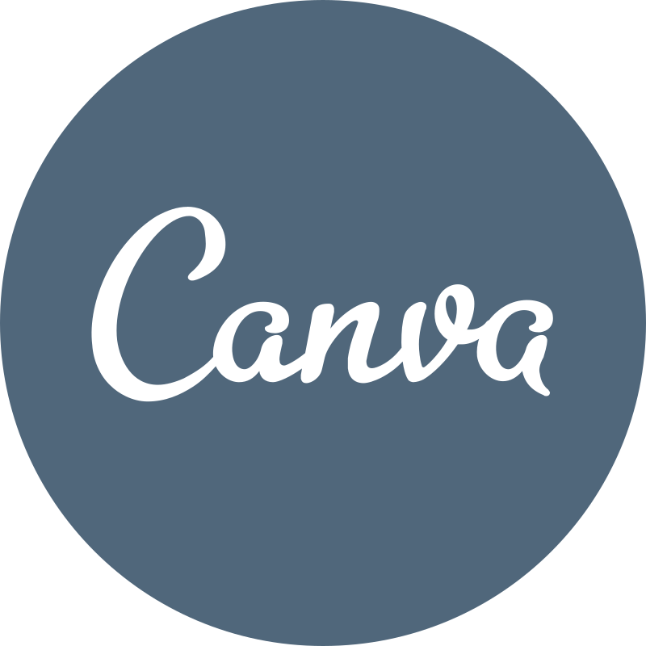
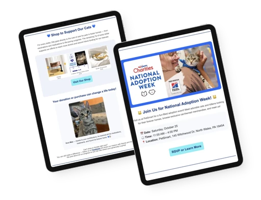
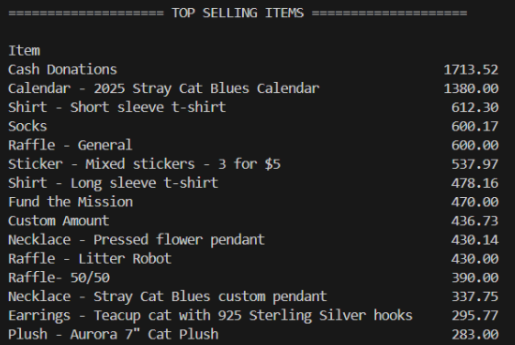
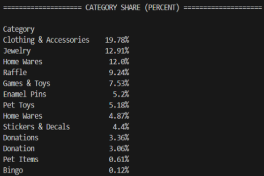
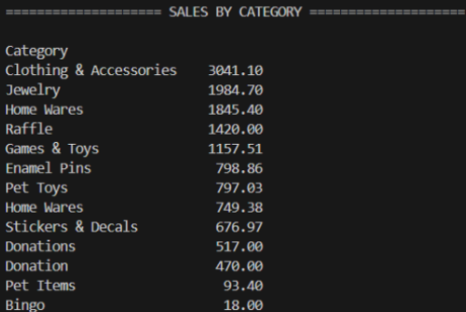
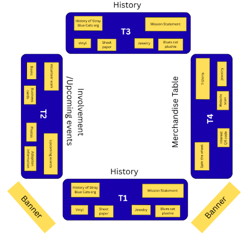
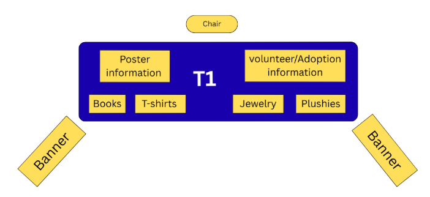
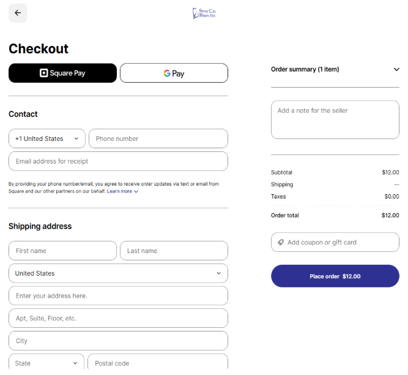

Email Marketing
Improve newsletter organization and engagement.
University of Maryland · Client-Based Capstone
Client-based project focused on helping Stray Cat Blues improve merchandise sales and organizational outreach through research-driven marketing, design, and data-informed recommendations.



As a part of our INST490 course (Integrated Capstone for Information Science), we worked alongside our client, Stray Cat Blues, to assist them with company marketing and strategy.
Stray Cat Blues is a nonprofit cat rescue in Colmar, Pennsylvania, seeking to increase merchandise revenue and expand its outreach. Working directly with the organization, our team explored opportunities across its online store, email marketing, in-person events, advertising, and merchandise strategy to develop practical recommendations that could be implemented within the organization's limited resources.
Stray Cat Blues reached a total of $20,000 in merchandise sales in 2022 and has not reached that number again, thus creating their tangible goal.
As a nonprofit with limited funds and outreach, they wanted to better understand how to improve sales across its online shop, in-person events, and social media presence.
Improve newsletter organization and engagement.
Identify opportunities to reduce checkout process friction.
Improve table layouts and merchandise visibility.
Create an accessible Google Ads strategy.
Use sales data to identify top-performing products and trends.
Five workstreams. One goal: stronger outreach and merchandise sales.
To better understand how Stray Cat Blues could increase merchandise revenue, we analyzed a full year of 2024 transaction data to identify top-performing products, category-level performance, and sales trends.
We cleaned and prepared the raw client data by removing irrelevant or missing data cells, then wrote a Python script to calculate core sales metrics.
These metrics helped us understand Stray Cat Blues' overall sales performance in 2024.



The client requested ideas and setup designs for their in-person tabling events at various markets and fairs. They wanted a more effective setup to showcase their organization, attract customers, and engage audiences.
Our team explored table arrangements designed to make merchandise more visible, improve portability, and encourage visitors to engage with the organization.

When space allows, a four-table configuration creates dedicated areas for merchandise, organizational history, and visitor engagement.

For smaller spaces or events with fewer setup options, one organized table keeps key information and merchandise accessible.
We reviewed the existing merchandise checkout experience to identify opportunities to improve navigation, payment accessibility, and ease of purchase for customers supporting the organization.

Existing checkout experienceExplore autofill and saved customer information to reduce repetitive entry.
Improve the visibility of available payment options during checkout.
Consider an optional round-up donation feature to support the organization's work.
Because Stray Cat Blues had limited experience and resources for digital advertising, we created a tailored, step-by-step Google Ads guide with recommendations for campaign goals, keywords, locations, budgets, and nonprofit-specific opportunities.
A donation program for eligible nonprofit organizations that can provide up to $10,000 per month in free Google Search advertising to support awareness and website traffic.
Explore Google Ad GrantsAcross five workstreams, we explored how data, design, and clearer communication could help Stray Cat Blues connect with more supporters and improve merchandise sales.
Sales analysis helped identify which merchandise categories and individual products generated the strongest revenue.
Checkout analysis and in-person table recommendations focused on making it easier for customers to engage, purchase, or support the organization.
Email marketing, Google Ads, social media, and physical events offered different opportunities to reach potential supporters.
This project taught me how to approach design and research within real-world constraints. Rather than creating one large end-to-end product, we worked directly from a client's needs and developed practical solutions across multiple areas of their organization. It strengthened my ability to adapt research, design, data analysis, and communication skills to different problems while keeping the client's goals and available resources at the focus of the work.
One of my biggest takeaways was that meaningful UX work does not always mean creating a new product or interface. Small improvements to existing experiences, when grounded in research and aligned with real organizational needs, can create meaningful value. I believe we were able to help Stray Cat Blues make a difference in their marketing and outreach strategies as a nonprofit with limited resources and experience.
Good design starts with understanding the problem and creating solutions that work for the people and organizations they serve.